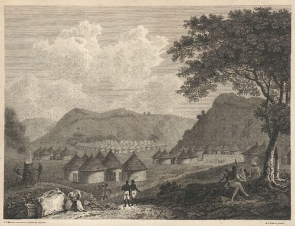

Mungo Park's Travels in the Interior of Africa, published in 1799, set the standard for popular travel literature. His exciting tale captured the imagination of European readers, who had little knowledge or preconception of Africa. While Park had a scientific background, he held his audience with tales of kidnapping, illness and other deadly trials.

Mungo Park was not the first European to visit Africa, but the popularity of his narrative helped to establish themes which were repeated by many others. To satisfy readers, travel writers embellished the exotic and dangerous nature of Africa. That were not always lying; Park disappeared during his second attempt at exploration and was never heard from again.